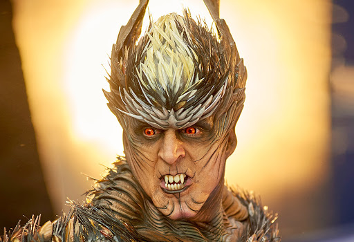

CHITTI Arch Nemisis
Pakshi raja
Pakshi raja loves nature and birds, he suicided because all the birds are dying due to mobile networks. His soul didn't die, he can attract mobiles and transform to any character.
Potoo
Powers of Pakshi raja
The main source of power for Pakshi Rajan is his Aura. Aura is a type of coloured radiation which enclose human body, a place or an object. It is a paranormal concept. In simple words, it is the influence a person has over some region around them.
- Controlling mobile phones
- Can control other person without his consent
- Causing high radiation

Back to index